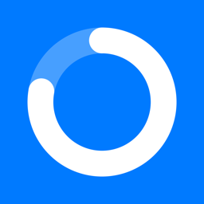
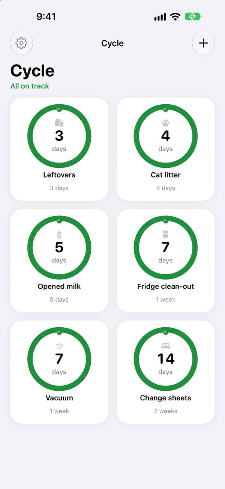
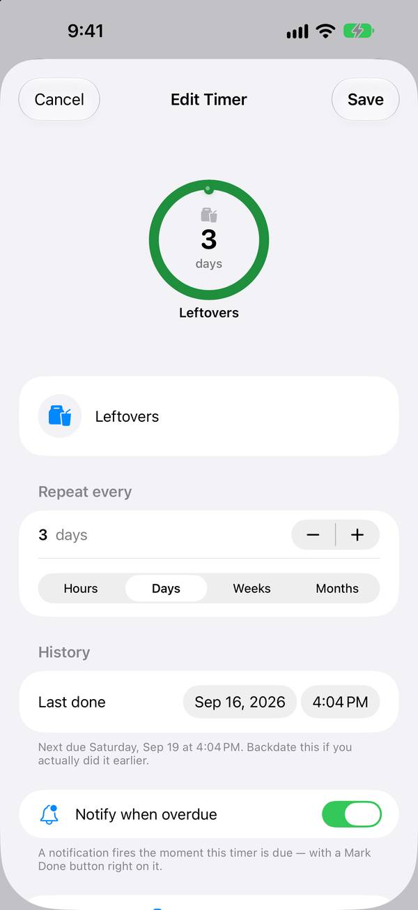

Seize Apps · iOS
Cycle Timers
Cada tarea de casa tiene su ciclo. Cycle Timers convierte lo que repites y olvidas —el agua de las plantas, las sábanas limpias, la arena del gato— en anillos que se vacían con el tiempo y vuelven a empezar en cuanto marcas la tarea como hecha.
Descargar en la App Store

Qué hace
Una sola cosa, bien hecha.
El tiempo, de un vistazo
El color y la forma te dicen qué está reciente, qué se acerca y qué necesita atención ahora. Sin listas que leer.
Hecho significa reiniciado
Un toque marca la tarea como hecha y empieza el siguiente ciclo, directamente desde el widget si quieres.
Tuyo, no nuestro
Sin cuenta y sin rastreo. Tus temporizadores se quedan en tu dispositivo, donde debe estar una herramienta de casa.
Privacidad
Tuyo, no nuestro.
Cycle Timers no recoge ningún dato. Los temporizadores viven en tu dispositivo, en un contenedor privado compartido solo con los widgets de la propia app; los recordatorios se programan en local.
Una app de Seize Apps.